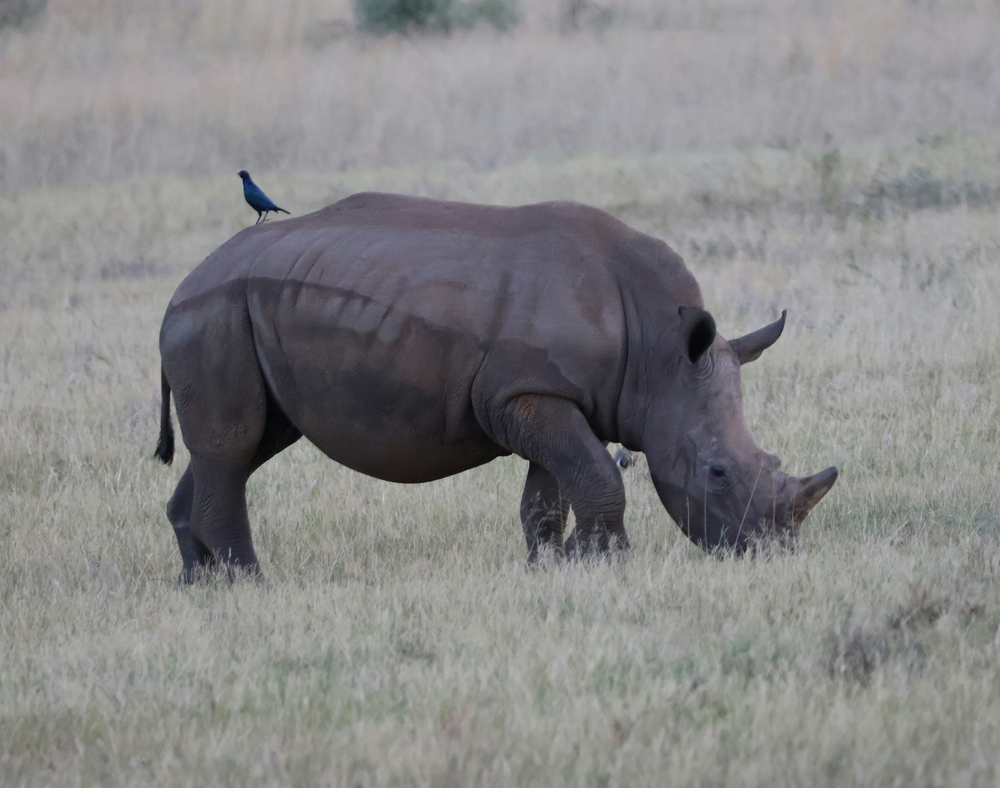
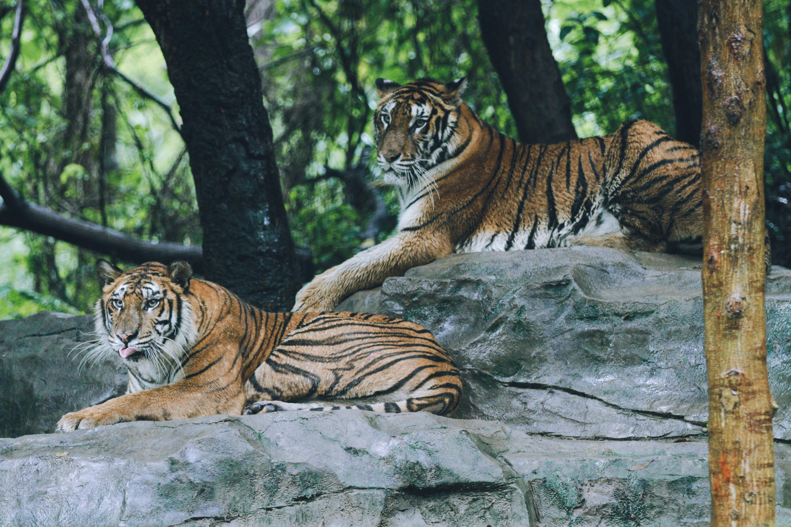
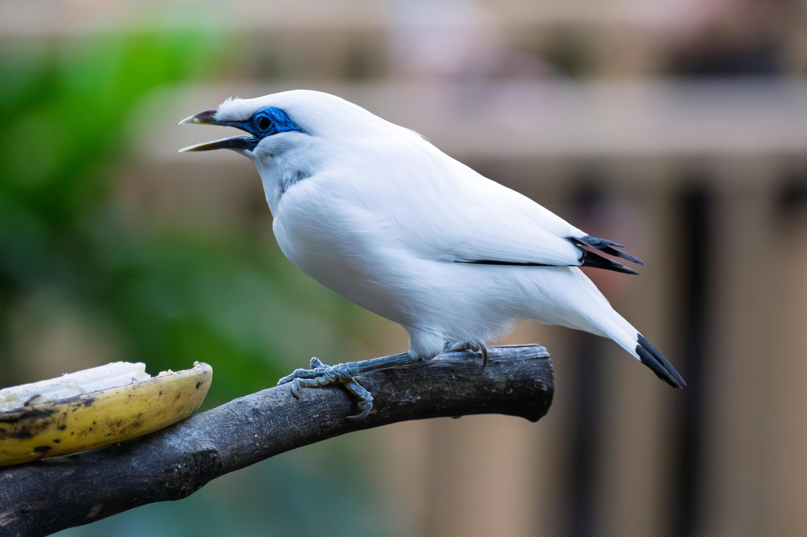

📸 Sighting Reports
View and manage sighting reports from your students
👤
Spotted Javan Rhinoceros in Ujung Kulon National Park
📍 Ujung Kulon National Park, Java
🦏 1 individual

👤
Spotted Sumatran Tiger in Gunung Leuser
📍 Gunung Leuser, Sumatra
🐅 2 individuals

Photo: Sumatran Tiger
👤
Spotted Bali Myna in Bali Barat National Park
📍 Bali Barat National Park, Bali
🐦 3 individuals

Photo: Bali Myna
👤
Spotted Komodo Dragon in Komodo Island
📍 Komodo Island, Nusa Tenggara
🦎 1 individual
No photo provided for this sighting
👤
Spotted Javan Hawk-Eagle in Gunung Gede Pangrango
📍 Gunung Gede Pangrango, Java
🦅 2 individuals
Photo: Javan Hawk-Eagle
👤
Spotted Sumatran Orangutan in Bukit Lawang
📍 Bukit Lawang, Sumatra
🦧 1 individual

Photo: Sumatran Orangutan
👤
Spotted Celebes Crested Macaque in Tangkoko Reserve
📍 Tangkoko Reserve, Sulawesi
🐒 5 individuals
No photo provided for this sighting
👤
Spotted Sumatran Elephant in Way Kambas
📍 Way Kambas, Sumatra
🐘 4 individuals

Photo: Sumatran Elephant
👤
Spotted Bali Myna in Nusa Penida
📍 Nusa Penida, Bali
🐦 1 individual
No photo provided for this sighting
👤
Spotted Javan Rhinoceros in Ujung Kulon National Park
📍 Ujung Kulon National Park, Java
🦏 1 individual

Photo: Javan Rhinoceros